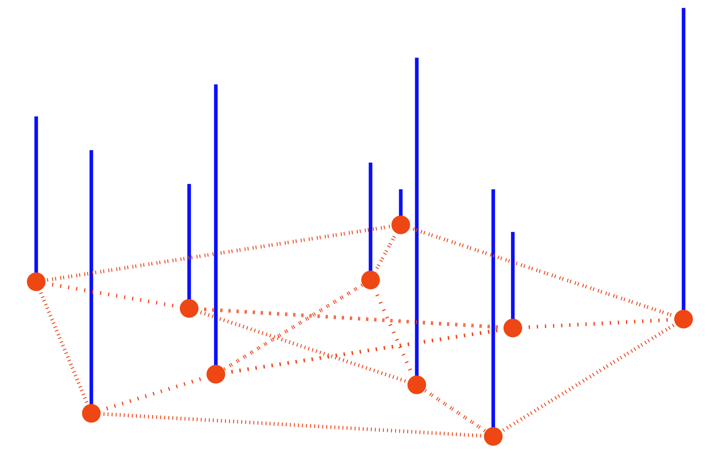
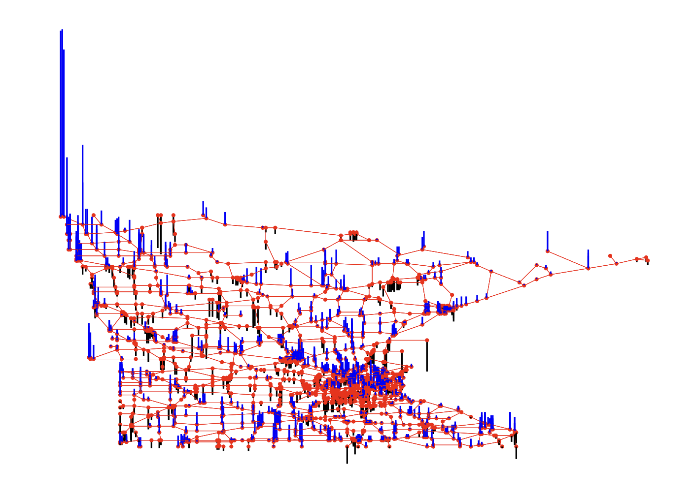

import numpy as np
import networkx as nx
import matplotlib.pyplot as pltDefinitions
Import
Graph Signal

Suppose we have observed a real-valued signal, denoted as \(y: V \to \mathbb{R}\), from a graph \({\cal G} = (V, E)\), where \(V\) represents the set of nodes and \(E\) represents the set of edges.
Regular Graph
모든 node가 동일한 degree를 갖는 그래프
이것은 시계열에서의 Graph Shift Operator로써 볼 수 있지.
w=np.zeros((5,5))
for i in range(5):
for j in range(5):
if i==j :
w[i,j] = 0
elif i-j == 1 :
w[i,j] = 1
elif j-i == 4 :
w[i,j] = 1warray([[0., 0., 0., 0., 1.],
[1., 0., 0., 0., 0.],
[0., 1., 0., 0., 0.],
[0., 0., 1., 0., 0.],
[0., 0., 0., 1., 0.]])lst = []
for i in range(5):
for j in range(5):
if w[i,j] == 1:
lst.append([i,j])np.array(lst)array([[0, 4],
[1, 0],
[2, 1],
[3, 2],
[4, 3]])동일한 차수를 갖는다?
Note
참고로, 무조건 degree matrix가 단위행렬일 필요는 없고 \(D = kI\)가 성립해도 Regular Graph
d= w.sum(axis=1)
D= np.diag(d)Darray([[1., 0., 0., 0., 0.],
[0., 1., 0., 0., 0.],
[0., 0., 1., 0., 0.],
[0., 0., 0., 1., 0.],
[0., 0., 0., 0., 1.]])G = nx.Graph()G.add_edges_from(np.array(lst))plt.figure(figsize=(10, 10))
nx.draw_networkx(G, with_labels=True, font_weight='bold', node_color='orange', node_size=1500, font_color='white', font_size=30,width=5)
Non-Regular Graph
w = np.array([[0., 0., 0., 0., 0.],
[1., 0., 1., 1., 1.],
[1., 1., 0., 0., 0.],
[0., 0., 1., 0., 1.],
[1., 0., 0., 1., 0.]])lst = []
for i in range(5):
for j in range(5):
if w[i,j] == 1:
lst.append([i,j])np.array(lst)array([[1, 0],
[1, 2],
[1, 3],
[1, 4],
[2, 0],
[2, 1],
[3, 2],
[3, 4],
[4, 0],
[4, 3]])
Note
모든 Degree가 동일하는 가정이 무너져 regular graph 로 정의할 수 없음
d= w.sum(axis=1)
D= np.diag(d)Darray([[0., 0., 0., 0., 0.],
[0., 4., 0., 0., 0.],
[0., 0., 2., 0., 0.],
[0., 0., 0., 2., 0.],
[0., 0., 0., 0., 2.]])G = nx.Graph()G.add_edges_from(np.array(lst))plt.figure(figsize=(10, 10))
nx.draw_networkx(G, with_labels=True, font_weight='bold', node_color='orange', node_size=1500, font_color='white', font_size=30,width=5)
참고 아래도 동일 차수이므로 regular graph
w = np.array([[1., 0., 0., 0., 0.],
[0., 1., 0., 0., 0.],
[0., 0., 1., 0., 0.],
[0., 0., 0., 1., 0.],
[0., 0., 0., 0., 1.]])d= w.sum(axis=1)
D= np.diag(d)Darray([[1., 0., 0., 0., 0.],
[0., 1., 0., 0., 0.],
[0., 0., 1., 0., 0.],
[0., 0., 0., 1., 0.],
[0., 0., 0., 0., 1.]])lst = []
for i in range(5):
for j in range(5):
if w[i,j] == 1:
lst.append([i,j])G = nx.Graph()G.add_edges_from(np.array(lst))plt.figure(figsize=(10, 10))
nx.draw_networkx(G, with_labels=True, font_weight='bold', node_color='orange', node_size=1500, font_color='white', font_size=30,width=5)
Non-Euclidean vs Euclidean
Euclidean
Ex1) 1D grid
w=np.zeros((5,5))
for i in range(5):
for j in range(5):
if i==j :
w[i,j] = 0
elif i-j == 1 :
w[i,j] = 1lst = []
for i in range(5):
for j in range(5):
if w[i,j] == 1:
lst.append([i,j])d= w.sum(axis=1)
D= np.diag(d)
Note
모든 Degree가 동일한, 특히 단위행렬로 나오는 유클리디안 데이터
Darray([[0., 0., 0., 0., 0.],
[0., 1., 0., 0., 0.],
[0., 0., 1., 0., 0.],
[0., 0., 0., 1., 0.],
[0., 0., 0., 0., 1.]])G = nx.Graph()G.add_edges_from(np.array(lst))plt.figure(figsize=(20, 5))
nx.draw_networkx(G, with_labels=True, font_weight='bold', node_color='orange', node_size=1500, font_color='white', font_size=30,width=5)
Ex2) 2d grids
w = np.ones((4, 4))
for i in range(4):
for j in range(4):
if i==j :
w[i,j] = 0lst = []
for i in range(4):
for j in range(4):
if w[i,j] == 1:
lst.append([i,j])d= w.sum(axis=1)
D= np.diag(d)
Note
모든 Degree가 동일하여 \(D = 3I\)로 표현되는 유클리디안 데이터
Darray([[3., 0., 0., 0.],
[0., 3., 0., 0.],
[0., 0., 3., 0.],
[0., 0., 0., 3.]])G = nx.Graph()G.add_edges_from(np.array(lst))plt.figure(figsize=(10, 10))
nx.draw_networkx(G, with_labels=True, font_weight='bold', node_color='orange', node_size=1500, font_color='white', font_size=30,width=5)
Non-Euclidean
Ex3) Different Weights(2D shape, 1D manifold)
Weight 같다고 가정하고 그래프 시각화
w=np.zeros((5,5))
for i in range(5):
for j in range(5):
if i==j :
w[i,j] = 0
elif i!=j:
w[i,j] = 1lst = []
for i in range(5):
for j in range(5):
if w[i,j] == 1:
lst.append([i,j])G = nx.Graph()G.add_edges_from(np.array(lst))plt.figure(figsize=(5, 5))
nx.draw_networkx(G, with_labels=True, font_weight='bold', node_color='orange', node_size=500, font_color='white', font_size=30,width=5)
pi=np.pi
ang=np.linspace(-pi,pi-2*pi/5,5)
r=5+np.cos(np.linspace(0,12*pi,5))
vx=r*np.cos(ang)
vy=r*np.sin(ang)
f1=10*np.sin(np.linspace(0,6*pi,5))
f = f1 + np.random.normal(5)D = np.zeros([5,5])
locations = np.stack([vx, vy],axis=1)
for i in range(5):
for j in range(i,5):
D[i,j]=np.linalg.norm(locations[i]-locations[j])
D = D + D.TDarray([[ 0. , 6.0964895 , 11.4126782 , 9.53062515, 7.05342303],
[ 6.0964895 , 0. , 6.0964895 , 7.60845213, 9.53062515],
[11.4126782 , 6.0964895 , 0. , 6.0964895 , 11.4126782 ],
[ 9.53062515, 7.60845213, 6.0964895 , 0. , 6.0964895 ],
[ 7.05342303, 9.53062515, 11.4126782 , 6.0964895 , 0. ]])
Note
가중치 값이 다 다르게 형성되어 있다. 따라서 \(D=kI\)형태로도 표현할 수 없어 레귤러 메트릭스의 정의를 충족하지 못하며, 이는 비유클리디안 데이터이다.
fig, ax1 = plt.subplots(1,1,figsize=(5,5),subplot_kw={"projection":"3d"})
ax1.grid(False)
ax1.scatter3D(vx,vy,f,zdir='z',s=50,marker='.',color='gray')
ax1.plot3D(vx,vy,f1,'--k',lw=3)[<mpl_toolkits.mplot3d.art3d.Line3D at 0x7f549813c160>]
Ex3) Graph Signal with Non-Euclidean domain
degree matrix가 단위행렬이 아니어서 레귤러 그래프가 아닌 그래프

Ex4) 3D shape, 2D manifold
Shuman, David I, Sunil K Narang, Pascal Frossard, Antonio Ortega, and Pierre Vandergheynst. 2013. “The Emerging Field of Signal Processing on Graphs: Extending High-Dimensional Data Analysis to Networks and Other Irregular Domains.” IEEE Signal Processing Magazine 30 (3): 83–98.